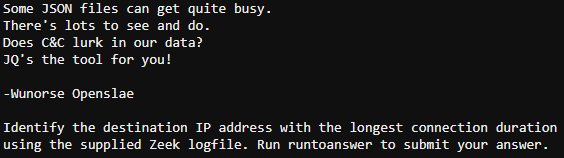

Zeek JSON Analysis¶
Challenge¶
The initial dialog with Wunorse Openslae:
Wunorse Openslae
The hint from our badge:
Jq From: Wunorse Openslae Parsing Zeek JSON Logs with JQ
The banner page from the terminal challenge:
Hints¶
Wunorse Openslae That's got to be the one - thanks! Hey, you know what? We've got a crisis here. You see, Santa's flight route is planned by a complex set of machine learning algorithms which use available weather data. All the weather stations are reporting severe weather to Santa's Sleigh. I think someone might be forging intentionally false weather data! I'm so flummoxed I can't even remember how to login! Hmm... Maybe the Zeek http.log could help us. I worry about LFI, XSS, and SQLi in the Zeek log - oh my! And I'd be shocked if there weren't some shell stuff in there too. I'll bet if you pick through, you can find some naughty data from naughty hosts and block it in the firewall. If you find a log entry that definitely looks bad, try pivoting off other unusual attributes in that entry to find more bad IPs. The sleigh's machine learning device (SRF) needs most of the malicious IPs blocked in order to calculate a good route. Try not to block many legitimate weather station IPs as that could also cause route calculation failure. Remember, when looking at JSON data, jq is the tool for you!
Finding Bad in Web Logs From: Wunorse Openslae Do you see any LFI, XSS, Shellshock, or SQLi?